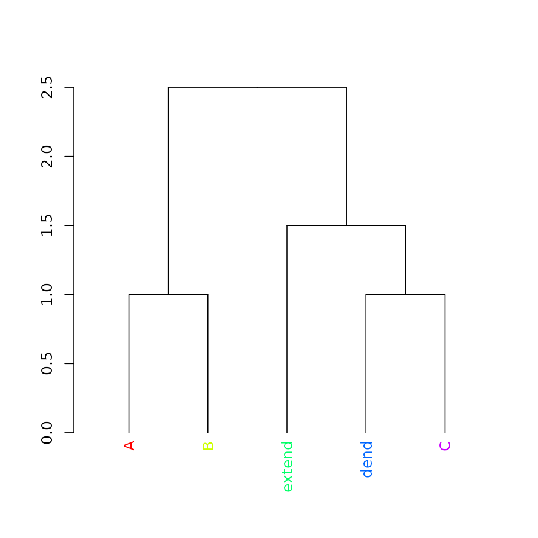
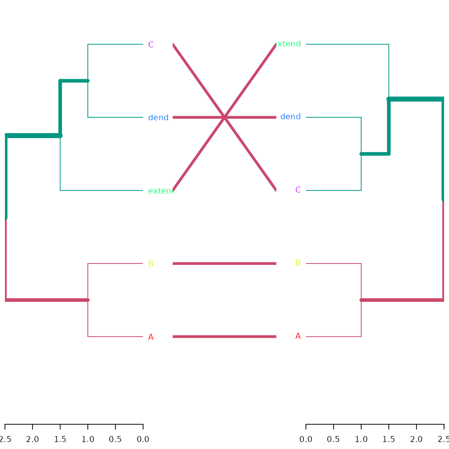
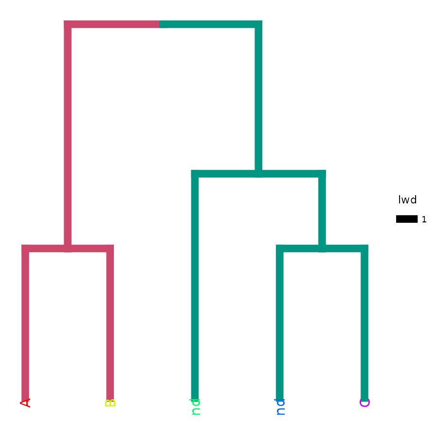

Quick Introduction
Tal Galili
2024-09-23
Source:vignettes/Quick_Introduction.Rmd
Quick_Introduction.RmdStart
Load:
Create a dendrogram (if you don’t know what %>% is,
read about it here
) :
Plot:
plot(dend)
Get/set labels
labels(dend)## [1] 1 2 5 3 4## [1] "A" "B" "extend" "dend" "C"Get/set labels’ colors
labels_colors(dend)## NULL
labels_colors(dend) <- rainbow(5)
labels_colors(dend)## A B extend dend C
## "#FF0000" "#CCFF00" "#00FF66" "#0066FF" "#CC00FF"
plot(dend)
Cut-tree, and color branches
cutree(dend, k = 2)## A B dend C extend
## 1 1 2 2 2
dend <- color_branches(dend, k = 2)
plot(dend)
Sort

Compare
tanglegram( dend, dend2 )
Cor
cor_cophenetic( dend, dend2 )## [1] 1ggplot2

Send to plot.ly
# library(plotly)
# set_credentials_file(...)
# you'll need to get it from here: https://plot.ly/ggplot2/getting-started/
# ggplot(dend)
# py <- plotly()
# py$ggplotly()